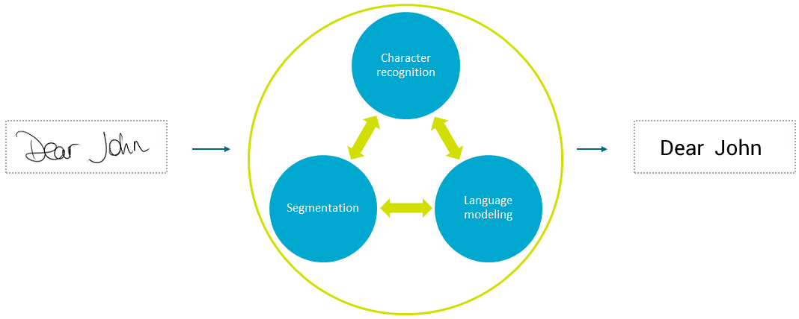
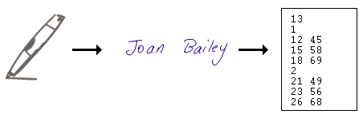

MyScript is the industry standard in digital ink-based handwriting recognition. It can recognize handwritten text, music, shapes or equations and mathematical expressions written with a digital pen or tablet, or any type of touchscreen. Its artificial intelligence-based recognition technology has won many awards and provides the best accuracy in its class.
The diagram below shows the information processed by the recognition engine to convert handwriting to text.

The recognizer will process the handwriting intelligently. It refers to lexicons, and uses a language model to understand how parts of a language come together and interact. It will not just guess one character at a time, but a whole sentence. So you can allow your application to accept complex handwriting.
For shapes and equations, different recognition engines are used and the recognition process is simpler, as less data resources (e.g. dictionaries) are needed.
Handwriting recognition generally refers to two different and fundamental technologies, namely off-line recognition (optical character recognition, widely known as OCR) and on-line recognition. OCR applications use pixel images originating from cameras or scanners. On-line recognition systems analyze a sequence of points in 2D that describes the trajectory of the tip of a digital pen.
MyScript performs on-line recognition and works exclusively on digital ink as input. Digital ink can be defined as a series of strokes. A stroke is defined as the trajectory of the pen from the moment it is touching the surface until it is lifted again. It is represented as a sequence of 2D points (x;y) ordered by time. Digital ink thus refers to a dynamic process that takes into account where strokes start, where strokes end, and in which order they were written.
Since digital ink contains more information about the handwriting signal (time order information), handwriting recognition software using digital ink usually achieves higher recognition accuracy than OCR software.

MyScript technology relies on three main processes: symbol classification, segmentation and linguistic-based analysis. These three main stages take place simultaneously. Information is exchanged between the three processes to find the most probable recognition result.
The symbol classification and the segmentation rely on the knowledge of the existing symbols related to an input form type (an input form can be a piece of text, a shape, an equation, a music score etc.).
The segmentation tries to group strokes together. Each group hypothesis is meant to match as close as possible an existing symbol. For instance, it can group strokes to form a character, a music note, a shape and so on.
The linguistic-based analysis relies on a set of norms that rule the way existing symbols of an input form type can be combined to make up a meaningful content.
MyScript is based on artificial intelligence and so works mainly on probability. It gives the most probable result it finds, in accordance with the criteria it has to work with.
For recognition of text, the result is delivered as a kind of tree: It is hierarchical.
The result is considered on 3 levels: character, word and text (the whole ink sample). At each level, the recognizer can keep several candidates, or likely alternatives that it also found during its deduction. You can get several recognition candidates, at any level, if you ask for them in the initial request. For example, this could allow your application to provide alternative recognition choices. You can ask in your request to see the different levels of results and ask for a certain number of candidates for each level.
A score is provided, from 0 to 1. The resemblance score reflects the level of confidence in the recognizer's raw output. The normalized score reflects how confident the recognizer is, taking into account all the resources it has used to recognize (dictionaries, lexicons, etc.). It is probably the latter score that you should refer to.
For shapes and equations, results are more straightforward. For shapes, it is a shape type (e.g. a circle), a set of shape "primitives" (the shape's composing elements) and knowledge on how the shape appears spatially (so it can be reproduced). For equations, it can be a LaTeX or MathML string, which you will have to render yourself if you wish to display it as an image.